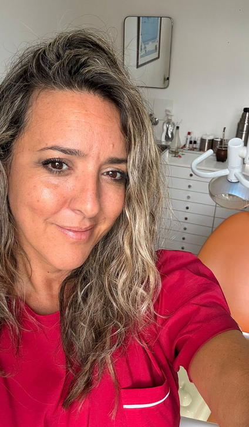

Odontología especializada
Tecnología rotativa y láser para tratamientos más cómodos y resultados duraderos.
Plaza Independencia. En el corazón de Montevideo.
Agendar por WhatsApp
Cada tratamiento está diseñado para minimizar el dolor y maximizar el resultado.
Raíces de titanio integradas al hueso para reponer piezas perdidas con la estabilidad de un diente natural.
Más información sobre Implantes →
Extracciones, biopsias y procedimientos quirúrgicos bajo estrictos protocolos de bioseguridad. Técnicas de mínima invasión para una recuperación ágil.
Más información sobre Cirugía →Sistemas automatizados que permiten una limpieza profunda de conductos en una sola sesión, con mayor precisión y sin el dolor de los métodos tradicionales.
Más información →Bioestimulación de baja intensidad para eliminar el dolor de aftas y llagas bucales de forma instantánea. Sin fármacos, sin contacto, apto para niños.
Más información →(o odontología estética) es la especialidad que mejora el aspecto de tus dientes y encías para lograr una sonrisa armoniosa. Corrige el color, la forma, el tamaño y la alineación, garantizando siempre la funcionalidad.
Más información →Resultados reales y discreción absoluta.
"Buscaba un resultado natural para mi estética dental y la Dra. Cecilia superó mis expectativas. Muy profesional y atenta en cada detalle."
"La tecnología láser para las aftas fue increíble. El alivio fue instantáneo. Llevé a mis hijos también y quedé muy conforme con la atención."
"Tenía un diente muy flojo. El implante de la Dra Olguín cambió mi vida. He vuelto a masticar sin temor! "
¿Por qué coordinan por WhatsApp?
Para brindarle atención sin esperas, realizamos un triaje previo que nos permite asignar exactamente el tiempo que su caso requiere.
¿El tratamiento de conducto es doloroso?
Con tecnología rotativa el procedimiento es mucho más ágil y prácticamente indoloro en comparación con los métodos tradicionales.
¿Atienden urgencias odontológicas?
Sí. Priorizamos a pacientes con dolor agudo o infecciones para darles respuesta rápida dentro de la agenda del día.
¿Cuánto tiempo después de puesto el implante se pone la corona ?
Entre tres y cuatro meses. Depende de cada paciente
Plaza Independencia 830, Apto. 701
Edificio Ciudadela, Centro, Montevideo
+598 98 286 525
Lunes a Viernes · Previa coordinación